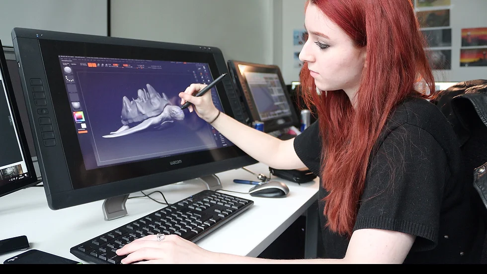

MOTOCICLETAS
desde muy joven se me a enseñado a andar en motocicletas, afectando mis gustos a tal punto que una forma de relajarme es salir a andar la sensacion de la velocidad hace que mi corazon se accelere a tal punto que toda preocupacion se va
VIDEOJUEGOS
desarrolle esta aficion gracias a las maquinas recreativas que habian serca del lugar donde vivia, sencillamente ver pixeles moviendose en una patalla era algo nuevo para mi (ver chicos mayores jugar al Mortal Kombat y al Street Fighter era para mi lo mejor) mi aficion por los videojuegos aumrnto con la llegara de los Souls like (es un subgénero de los videojuegos de rol de acción o acción y aventura caracterizado por altos niveles de dificultad y una trabajada narrativa de mundo usualmente en una ambientación de fantasía oscura), podia pasar horas sencillamente andando sin ningun objetivo
ANIMACION
Esta aficion es una de las que mejor representa mi personalidad, ver por primera vez pasar por la pantalla unos trasos a mano y sentir que los personajes tenian vida me hacia sentir emociones que las peliculas normales no me hacian sentir, Dr. Slump fue la primera animacion en 2D que me hizo conectar con ese mundo (Dr. Slump es un manga y anime japonés de Akira Toriyama. Cuando el manga apareció en las páginas de la revista Shōnen Jump de Shūeisha en diciembre de 1979, su autor era un desconocido por el gran público)
ARKEANOS
.jpeg)
A la edad de 8 años estaba viviendo un situacion familiar dificil en la cual por esas causas me entre mucho en el mundo de youtube, y fue cuando los conoci, un grupo de personas las cuales me hacian reir con cualquier cosa que hacian, hicieran lo que hicieran para mi era increible(me sentia totalmente identificado con ellos) paso la mayor parte del dia atento de lo que hacen, tanto que llegue al punto de comunicacrme con varios de ellos y son sencillamente gente maravillosa su contenido se basa en videojuegos de estilo survival (Los videojuegos de supervivencia son un subgénero de los videojuegos de acción ambientado en un ambiente hostil, intenso y de mundo abierto, donde los jugadores generalmente comienzan con equipos mínimos y se les exige que recolecten recursos , herramientas de artesanía, armas y refugio, y sobrevivan el mayor tiempo) a dia de hoy los veo dia a dia son mi inpiracion y motivacio para seguir adelante